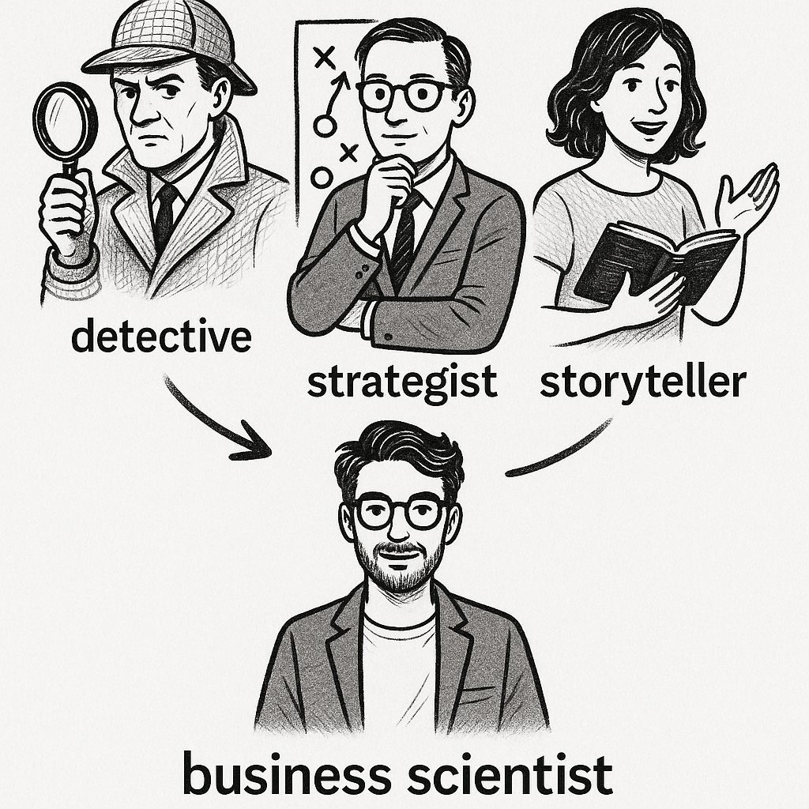

2 The Core Skills of a “Business Scientist”
By the end of this chapter, you should be able to:
- Identify the eight core skills that underpin effective business analytics.
- Explain how each skill helps analysts tackle business problems using data.
- Distinguish between different types of skills (e.g., technical, strategic, communicative) and their roles.
- Reflect on how your individual strengths align with different analytics skill areas, and how diverse skill sets contribute to effective teams.
2.1 Becoming a Business Scientist: A Scientific Mindset Within a Business
Many students begin a business analytics course expecting to learn tools—how to write some code, build some charts, maybe even fit a model or two. And those are important outcomes. But learning the foundations of business analytics means more than just acquiring technical capabilities. It’s about becoming someone who can use data to tackle messy, ambiguous, and important business problems. That’s a different kind of challenge. It requires not just tools, but judgement. Not just answers, but knowing how to formulate better questions and how to choose the right tools to answer them.
This means being able to think conceptually about a problem before diving into data or code. That includes understanding the context, identifying what matters, and knowing how different kinds of questions—descriptive, predictive, or causal—can shape the analysis. It means treating analysis not just as a task, but as a form of problem-solving. This is the mindset of a business scientist: someone who combines data, domain knowledge, and structured reasoning to help businesses make better decisions. This is the identity we’ll use throughout the rest of the book. It’s an opinionated choice, but a deliberate one. We believe “business scientist” captures the blend of analytical skill, conceptual thinking, and real-world impact that defines the kind of analyst we’re shaping you to become. It reflects not just what you do, but how you think—and the value you bring to the organisations you can aspire to work with in the future.
This chapter introduces the foundational skills that support that kind of thinking and working. These skills aren’t tied to any one analytics tool, task or business discipline. Instead, they shape how you approach problems, how you engage with data, and how you turn analysis into insight and action. Some of them are technical—like transforming and modelling data. Others are strategic—like understanding the business context or framing a problem in the right way. Still others are communicative—like helping a team of non-technical experts see the story behind the numbers. All of these skills are part of doing good business analytics.
Science is about systematically learning from the world. Scientists don’t just collect data for the sake of it—they begin with questions, develop hypotheses, and design ways to test them. They use evidence to update their beliefs and remain open to the possibility that they might be wrong. Thinking like a scientist means embracing uncertainty, asking sharp questions, and letting the data guide you—rather than simply confirming what you already believe.
Business scientists do the same thing, but in a commercial setting. The tools might look different, and the decisions might need to move faster, but the mindset is the same: stay curious, stay structured, and stay open to what the data is telling you.
In business contexts, the questions are often practical—and the stakes are real. You might find yourself investigating:
- Why a product isn’t selling as expected
- Whether a loyalty program actually increased retention
- How to segment your customer base more effectively
In each case, you’re not just reporting numbers. You’re solving a puzzle. You’re forming hypotheses and testing them against available data. You’re navigating messy constraints, incomplete information, and real-world pressure. And you’re building a case that helps someone else—your manager, your client, your team—make a better decision.
That’s what it means to think like a business scientist: to combine data and discipline with creativity and judgment, all in service of making sense of the world and creating value from that understanding.
2.2 From Mindset to Method

So what does this mindset actually look like in practice? Here’s how a business scientist approaches problems—not with a fixed recipe, but with a way of thinking that guides every step of the analysis.
Forming hypotheses You don’t dive into data blindly. You start by thinking: What might be driving this outcome? What would I expect to see if that explanation were true?
Testing ideas with data You treat data as evidence. Your ideas aren’t valid because you believe them—they’re supported because the evidence suggests they hold up.
Iterating and refining You rarely get everything right on the first attempt. You explore, learn, revise, and improve. That’s not a weakness—it’s how good analytics works.
Communicating clearly. You translate complexity into clarity. You don’t just present findings—you tell a story that helps people act on what you’ve discovered.
Think of the business scientist as a motley mix of three personalities — part detective, part strategist, part storyteller. Their role, which will be yours in time, is to uncover patterns, test explanations, and help businesses make smarter, evidence-based decisions. Companies today sit on mountains of data. But data alone doesn’t create value. Thinking well with data—asking good questions, finding the right evidence, drawing clear conclusions—is what transforms information into insight.
2.3 The 8 Skills of a Business Scientist
As we’ve discussed so far, doing business analytics isn’t just about knowing which buttons to press. It’s about how you think—and how you apply that thinking to solve real problems. This emphasis on thinking clearly with data is what sets great business scientists apart.
In many workplaces, the focus of those working in business analytics roles often drifts toward tools—what software someone can use, how many models they’ve memorised. But tools are only part of the picture. The best business scientists succeed because of their skillset: the habits of mind, ways of working, and communicative strengths that help them adapt to new problems, collaborate with others, and turn analysis into action. The tools everyone wants to talk about tend to come and go — often too fast for you to reach true proficiency before newer ones take over. Skills, by contrast, stick with you. In what follows, we’ll outline what we believe are the eight essential skills that form the foundation of thinking and working like a business scientist.
Here are 8 essential skills that make up the foundation of great business analytics:
1. Institutional Detail: Understanding the Business World
Businesses don’t operate in a vacuum. Each one exists within a broader ecosystem—shaped by its customers, competitors, suppliers, regulations, the wider industry it operates within and traditions. Great business scientists take the time to understand how their organization works from the inside out. Just like a biologist wouldn’t study an animal without first understanding its habitat, a business scientist doesn’t analyze data without grasping the environment the business operates in. Context isn’t background noise—it’s the terrain in which every decision plays out.
This means learning about pricing structures, seasonality, logistics, marketing strategies, regulatory constraints, and competitive dynamics. It means understanding the industry’s rhythms: when do customers typically buy? What external factors drive demand? How does the sales process actually work? Without this context, it’s easy to misinterpret what the data is telling you.
We think of learning institutional details as becoming fluent in your company’s language. Every business has its own vocabulary, its own calendar of important events, and its own unwritten rules about how things get done. The more you understand these local dynamics, the better you’ll be at spotting meaningful patterns in the data—and avoiding misleading ones.
While this step can feel dry or peripheral at first, it’s anything but. The deeper you go, the more you’ll find that institutional knowledge doesn’t slow analysis down—it sharpens it. It’s what lets you ask smarter questions, rule out bad explanations, and bring a level of insight that purely technical analysts often miss.
Before diving into Starbucks sales data, a business scientist would first step back and learn how the business actually works. That means understanding:
- Seasonal patterns, like when the Pumpkin Spice Latte appears—and how limited-time drinks create predictable spikes in demand
- Loyalty mechanics, such as how stars are earned and redeemed, and how that influences purchasing behaviour
- Store types, since an airport kiosk has very different dynamics than a suburban drive-thru or university campus location
- Operational rhythms, like the intensity of the morning rush, how new drinks are rolled out, or how promotions vary across regions
All of these shape what success looks like—and what patterns in the data might actually mean.
What could go wrong?
Suppose you notice a sharp drop in cold brew sales during one week of the quarter. Without context, it’s tempting to infer a shift in customer preferences or the failure of a promotion. But a closer look might reveal something entirely different: a temporary supply chain issue that led to the coffee beans used to make cold brew being unavailable in many stores, or a change in the loyalty program that nudged customers toward redeeming rewards for other products. The data didn’t lie—but interpreting it without understanding the business can lead to the wrong story.
2. Data Discovery: Finding the Right Data
Data discovery is the art of figuring out what information exists—and what’s actually useful. Real-world data is messy and scattered. It lives in spreadsheets, dashboards, PDFs, databases, websites, cloud tools, and even emails. Analysts must be part detective, knowing where to look and who to ask. This involves both technical knowledge, understanding different data formats and storage systems, and social intelligence, knowing which colleagues or third-party data providers have access to what information. But finding the data is only the beginning.
Once you’ve tracked it down, you need to map the data landscape: What gets measured? What doesn’t—and why? Who owns which datasets? How frequently is information updated? Just as importantly, you need to assess quality and completeness. Is this data reliable? Are there systematic gaps? Does it actually capture what we care about?
Sometimes, the data you want doesn’t exist at all. In those cases, the your job is to get creative: to find proxies, build new measures, find ways to actively collect the data you need, or rethink the question in a way that makes progress possible.
Imagine you’re working with sales data from a multinational retailer. The dataset includes product-level revenue, discounting, and returns—but there’s no reliable cost data. You’ve been asked to estimate profit margins across product categories.
At first, it seems impossible. But a business scientist doesn’t stop there.
You start by mapping what is available: supplier codes, shipping methods, inventory turnover, and some high-level financial statements. Then you talk to colleagues in finance and procurement. Eventually, you piece together a working solution:
- You estimate average unit costs using inventory and COGS figures from quarterly reports.
- You use product weight and supplier codes to model shipping costs.
- You apply assumptions based on margin benchmarks in similar categories.
Is it perfect? No. But it’s documented, grounded, and far better than guessing—or giving up. That’s what good data discovery looks like in practice: not just finding data, but building a defensible understanding of what the data can and cannot tell you.
3. Business Theory: Understand People and Firms
Behind every data point is a decision. Whether it’s made by a customer, an employee, or an executive, that decision reflects goals, trade-offs, habits, and constraints. If we want to interpret data meaningfully, we need to understand what motivates the people and organisations behind it.
That’s where business theory comes in. Theory gives you mental models—ways of thinking—that help you make sense of patterns. You’re not just memorizing textbook definitions of “demand” or “utility.” You’re using concepts like pricing strategy, consumer psychology, supply and demand, and organizational incentives to interpret what you’re seeing in the data.
Why might sales spike on certain days? What drives customer loyalty? How do competitors respond to a new product launch? These aren’t just descriptive questions we answer with data —they’re behavioural ones. Theory helps you move from what happened, to why it happened, to what might happen next. In that sense, theory helps you uncover the mechanism—or more informally, the “why”—behind the patterns the data reveal.
Good business scientists borrow the tools of economists and psychologists among others. They think in incentives, trade-offs, and feedback loops. They understand that behaviour is often predictable—and that understanding those patterns is key to turning data into insight.
Imagine you’re analyzing employee turnover at a large firm. One team has unusually high resignation rates, and leadership wants answers. You start by examining basic patterns—tenure, role, compensation, manager—but nothing obvious jumps out.
A surface-level analysis might stop there. But a great business scientist brings theory to the table.
You recall models of motivation and incentives: Is the bonus structure rewarding the right behaviours? Are promotion paths clear? You consider organizational dynamics: Has there been a change in leadership or reporting lines? Are people leaving for competitors with a more flexible culture?
You dig deeper and discover that while pay is competitive, the team’s recent restructuring removed autonomy from senior staff—shifting decision-making to HQ. That’s not in the spreadsheet, but it explains the exits.
Theory didn’t just help you describe what was happening—it helped you understand why it was happening, and what might happen next if the structure doesn’t change.
4. Analytical Modelling: Choose the Right Tool
Different business problems require different methods. Sometimes a simple average is all you need. Other times, the problem calls for predictive algorithms, statistical models, or machine learning techniques. Great business scientists know how to match the complexity of the tool to the complexity of the task.
That means more than just knowing how to run a model—it means understanding the assumptions behind different approaches. When is a correlation meaningful? When do you need a more rigorous method to support a causal claim? How do you trade off accuracy against interpretability? The goal isn’t to reach for the fanciest method — it’s to choose the one that fits the question, the data, and the decision context.
And just as importantly, good analysts know when not to model. Sometimes the clearest and most compelling answer comes from a simple table or visualisation. Sometimes the question isn’t answerable—yet—because the right data doesn’t exist. Exercising judgment about when to model, how to model, and when to hold back is what separates technically competent business scientists from strategic, decision-focused ones.
Imagine you’re helping Coles figure out how much fruit and vegetables to order each week. The goal is to keep the shelves stocked—but not waste food.
You start with something simple: looking at the average sales from past weeks. It works okay—until a public holiday or heatwave throws things off.
Next, you try a more advanced method that also considers the season, day of the week, and weather. It works better, but someone suggests using a really complex model that nobody on the store team understands. You push back—because if the store managers don’t trust the numbers, they won’t use them.
And for rare items with very little data, you decide not to build a model at all. You just show the trends in a simple chart.
The skill: A good business scientist knows when a simple method is enough, when a more advanced one helps, and when to just keep it clear and practical. It’s not about the flashiest tool—it’s about using the right tool for the problem.
5. Analytical Theory: Know What Can Go Wrong
Working with data and analytical models is powerful—but it can also be risky. A misleading analysis can lead to the wrong decision, and in a business setting, that can be costly. Great business scientists are curious, but also careful. They think critically about whether the data and the method are really giving them the full picture.
This skill is closely connected to what you might hear in your statistics or quantitative methods classes: statistical thinking. It’s the habit of reasoning about data in a structured, careful way. It means questioning your results, spotting weak points in your reasoning, and understanding what your analysis can (and can’t) actually say.
That includes asking tough but important questions:
- Are we sure we’re measuring what we think we’re measuring?
- Could something else be causing this pattern?
- Would our conclusions change if we looked at different data—or looked at it a different way?
- What assumptions are we making—and are they reasonable for this situation?
You don’t need to know all the technical terms yet. What matters is developing the habit of looking under the hood. Sometimes your data leaves out important groups of people. Sometimes two things move together just by coincidence. Sometimes your analysis works well on past data but falls apart in the real world. The key idea is to always ask: What might I be missing, and how could that change the story the data appears to tell?
The best business scientists aren’t afraid to poke holes in their own work. They look for alternative explanations, check their assumptions, and clearly explain what their results do—and don’t—mean. That’s not being negative. That’s being honest about what the evidence actually supports. It’s what makes your work trustworthy—and it’s one of the most valuable habits you can develop. Some might say business scientists get a little too good at this—always finding what could go wrong. But don’t worry, it’s what makes your insights dependable, not just impressive.
Suppose a retailer launches a new loyalty program, and soon after, analysts notice that members are spending more than non-members. The initial report celebrates the program’s success.
But one analyst pauses: were customers spending more because of the program, or were the high spenders just more likely to sign up?
There was no clear before-and-after comparison. No comparison group who weren’t offered the option to sign-up. No test of whether the program caused the change. The team had found a pattern—but assumed it meant impact.
Analytical thinking in action: Good analysts don’t just spot patterns—they ask what explains them. Correlation alone isn’t enough. Without the right comparisons and reasoning, your analysis might be telling the wrong story.
6. Computational Skills: Work with Code and Technology
Today’s business scientists work with code. Languages like R allow you to clean data, test models, automate your workflow, and produce results that others can reproduce and build on. Knowing how to code doesn’t just make you faster—it makes your work clearer, more flexible, and more independent. You’re not waiting around for someone else to pull the data or run the analysis—you can do it yourself.
But this isn’t about becoming a software engineer. It’s about being comfortable enough with technology to solve data problems efficiently. That means knowing how to load data, reshape it, create useful visualisations, implement an analytical model, and document your process so that others can follow what you did.
It also means working across tools and platforms. Modern analytics happens in spreadsheets, databases, dashboards, cloud services, and version-controlled files. The specific tools will change over time—but the underlying mindset stays the same. Business scientists learn to break problems into steps, fix things when they break, and automate repetitive tasks so they can focus on the thinking.
Think of coding like learning to cook. At first, it can feel daunting—just like the first time you turn on the gas stove and see real flames and worry you might burn down the house. But once you get used to it, the heat becomes something you learn to control and use.
Early on, you follow recipes—step-by-step instructions written by others. You might not fully understand why something works, but you can still get a decent result.
Over time, you start to improvise. You recognise patterns, adapt techniques, and build your own workflows. You learn to debug when something “burns,” and eventually, you create your own reusable recipes for solving data problems.
You don’t need to become a professional chef—or a software engineer. But having basic coding skills gives you independence, creativity, and confidence in the analytics kitchen.
7. Presentation & Communication: Communicating what you find to non-specialists
Great insights don’t speak for themselves. You need to help them speak to others. Whether it’s through a graph, a dashboard, slide deck or a short written brief, business scientists shape their findings into clear, purposeful stories that help others understand what the data shows—and what to do about it.
Good communication starts with your audience. What decisions are they trying to make? What do they need to know to move forward? Different audiences need different approaches. Executives often want clarity: What’s happening, and what should we do about it? Your fellow analysts might care more about the method, the data sources, or the assumptions you made. A great business scientist can move between both—zooming out to frame the big picture, or zooming in when detail matters.
This kind of communication isn’t about flashy visuals or technical jargon. It’s about structured thinking, clean presentation, and sharp writing. That means:
- Designing graphs, tables and slides that show exactly what matters—no more, no less
- Telling a story with a beginning, middle, and end
- Anticipating questions before they’re asked
- Highlighting the recommendation, not just the result
The goal isn’t to impress people with how much you know. It’s to make it easier for them to think clearly, decide confidently, and take the next step.
A team prepares a presentation for senior leadership to explain the results of an A/B test. They include p-values, confidence intervals, model coefficients, and three dense charts about statistical assumptions.
When they present, the executives skim the slide and ask, “So… should we roll out the new version or not?”
The analysis was solid—but the message didn’t land.
The lesson: Even the best results can fall flat if the audience can’t see the relevance. For decision-makers, lead with the insight—not the math.
An analyst builds a clean, interactive dashboard showing churn rates across products and regions. They walk through the filters and visual options, confident in the design.
But when they present to a room of non-technical managers, someone interrupts: “This looks great—but what are we supposed to do with it?”
There’s no interpretation. No recommendation. Just data.
The lesson: A beautiful dashboard might not be enough for analytics focused audiences. If your audience can’t see what matters—or what to do—it won’t drive action.
8. Creativity & Judgment: Asking the Right Questions
Business analytics starts with curiosity. Before you can run any analysis, you need a question worth answering. Great business scientists don’t just respond to requests—they help shape them. They turn vague goals like “improve customer experience” or “reduce churn” into specific, testable questions that data can help resolve. Framing the problem is the first step toward solving it.
This takes both creativity and judgment. Creativity helps you see problems from new angles, reframe challenges, and imagine what might be possible. Judgment helps you filter: Which questions are actually worth answering? Which ones tie to real business decisions? The best questions are those that are both interesting and useful—they push thinking forward and point toward action.
This skill also involves timing. You won’t always be given a clean, well-defined problem to solve. Sometimes, the brief is too broad. Other times, the data reveals something surprising, and you have to decide whether it’s a meaningful lead or just noise. Knowing when to dig deeper and when to move on is part of the craft.
The best business scientists act like investigators. They notice when something doesn’t add up. They wonder about cause-and-effect relationships. They play out “what if” scenarios in their head before opening the dataset. This kind of curiosity—anchored by a strong sense of business relevance—is what helps them identify the questions that will lead to insights, and the insights that will lead to better decisions.
When you’re stuck in an analysis, take a step back and ask yourself:
What exactly am I trying to learn—and why does it matter?
Good business scientists don’t just dive into data—they pause to clarify the question. They ask things like:
- Is this question specific enough to answer?
- What would a useful answer look like?
- Who needs to make a decision based on this?
Framing a question well often makes the rest of the analysis easier. It tells you what data to look for, what methods to use, and when you’re done.
10 min
📝 Check-In: Which Skills Do You Already Have?
Take a moment to reflect. Which of the 8 skills below do you feel most confident in? Which ones do you want to develop this semester?
| Skill | Confidence Level (1 = low, 5 = high) |
|---|---|
| Understanding the business world | ☐ 1 ☐ 2 ☐ 3 ☐ 4 ☐ 5 |
| Finding the right data | ☐ 1 ☐ 2 ☐ 3 ☐ 4 ☐ 5 |
| Understanding how people and firms work | ☐ 1 ☐ 2 ☐ 3 ☐ 4 ☐ 5 |
| Choosing the right model or tool | ☐ 1 ☐ 2 ☐ 3 ☐ 4 ☐ 5 |
| Knowing what can go wrong | ☐ 1 ☐ 2 ☐ 3 ☐ 4 ☐ 5 |
| Coding and working with data tools | ☐ 1 ☐ 2 ☐ 3 ☐ 4 ☐ 5 |
| Communicating insights | ☐ 1 ☐ 2 ☐ 3 ☐ 4 ☐ 5 |
| Asking good questions | ☐ 1 ☐ 2 ☐ 3 ☐ 4 ☐ 5 |
Reflection questions:
- Which skill are you most excited to build?
- Which skill do you think businesses value most? Why?
We’ll revisit these questions throughout the course. For now, share your thoughts with a classmate—or drop your top skill in the class poll.
2.4 Applying and Combining the Skills
Not every business scientist uses every skill in equal measure. Some of the skills you’ve just seen—like communicating clearly, thinking critically with data, or understanding the business context—will show up in nearly every project you work on. Others—like predictive modelling or building dashboards—depend more on your specific role, your team, or the kinds of problems you’re tackling.
What we’ve offered so far is a starting point: a map of what it means to think and work like a business scientist. You won’t need to master all these skills overnight. But recognising which ones are foundational versus role- or project-specific can help you focus your development—and understand what makes different paths within analytics both challenging and rewarding.
Some of these differences also help explain why people are drawn to different types of analytics work. If you enjoy testing ideas and running experiments, you might be interested in projects that compare what happens when a business changes something—like a website layout or a pricing offer. If you like explaining things and helping others make sense of data, you might prefer working on reports, dashboards, or presentations. And if you enjoy solving puzzles behind the scenes, you might gravitate toward tasks like cleaning data, building models, or improving how information flows through a system.
In what follows, we’ll explore how these skills show up across different kinds of analytics roles and how they come together in practice.
Universal Skills: Always Needed
Some skills form the foundation of good analytics practice. They willshow up in nearly every project, across all industries, and regardless of what tools or techniques you use. Think of these as the core muscles of a business scientist—skills that support everything else.
Understanding the Business World is perhaps the most universal skill of all. No analysis happens in a vacuum. Whether you’re writing a simple sales summary or building a complex model, you need to understand how the business works in order to interpret patterns and give your results meaning. Without this context, even technically correct analysis can lead to irrelevant—or misleading—conclusions.
Finding the Right Data is just as essential. Good decisions require good inputs. Whether you’re scraping a website, querying a database, conducting a survey, or combining messy spreadsheets, the challenge is the same: figure out what information matters, and track it down. It’s not just about technical skills—it’s about knowing what to look for and why it matters.
Communicating What You Find is the bridge between analysis and action. If you can’t explain your findings in a clear and compelling way, your work won’t get used—no matter how insightful it is. Whether through graphs, slides, dashboards, or short write-ups, you need to help others understand what the data shows and what it means for them.
Asking the Right Questions is what sets great analysts apart, and arguably the most useful of the universal skills. Every project begins with curiosity: Why is this happening? What should we try next? What don’t we know yet? Knowing how to frame a focused, answerable, and relevant question is a skill in itself—and one that applies to every kind of analytics work.
Together, these four skills show up again and again. They’re not tied to any one job title or toolset—they’re what make you effective, no matter where you apply them.
Role- or Project-Specific Skills: Context-Dependent
The remaining skills become more or less important depending on your role, your industry, or the kind of problems you’re solving. This is where specialization begins—where business scientists develop deeper strengths based on what they do and where they work.
Understanding People and Firms becomes especially important in roles focused on strategy, consulting, or customer insights—anywhere human behavior and incentives drive outcomes. If you’re investigating why customers leave, how employees react to policy changes, or how a competitor might respond to a price cut, this skill goes from helpful to essential.
Choosing the Right Tool is crucial for roles that involve forecasting, optimization, or experimentation—like pricing analysts, risk managers, or product data scientists. In these roles, you’re not just analyzing past patterns—you’re building models that inform real decisions. That means knowing which method fits the question, the data, and the stakes.
Knowing What Can Go Wrong becomes especially important when the decisions being made based on your analysis carry significant risk—whether that’s financial, reputational, or strategic. If your findings influence pricing changes, hiring decisions, product launches, or policy shifts, mistakes can be costly. In these situations, being able to identify assumptions, check for errors, and communicate uncertainty clearly isn’t just a bonus—it’s part of being a responsible business scientist.
Working with Code and Technology varies the most across roles. If you’re building data pipelines, automating reports, or working with big datasets, this skill is essential. But in roles focused more on communication or insight interpretation, you might rely more on pre-built dashboards or visual tools. Either way, having some comfort with code gives you flexibility and independence.
2.4.1 Mini Case: Different Roles, Same Goal
Streamly, a fictitious fast-scaling global music streaming service, has recently expanded into over a dozen countries across Europe, Asia, and Latin America. But something’s wrong—churn rates in some regions are much higher than expected. The executive team wants to know why users are leaving—and what can be done to retain them.
Three different business scientists are brought in to investigate. Each brings a different background, focus, and skill mix. Their conclusions differ—but each adds a crucial piece of the puzzle:
🤖 Product Data Scientist
The Data Scientist works with millions of user-level records. Using survival models and machine learning techniques, they identify early warning signs of churn. The models reveal that users who don’t engage with playlists or explore new genres in their first 10 days are much more likely to cancel. Their recommendation? Introduce smarter onboarding journeys that promote exploration and improve the relevance of recommendations.
Key skills: Choose the Right Tool + Work with Code and Technology + Know What Can Go Wrong
🌍 Consumer Insights Manager
The Consumer Insights Manager conducts interviews and analyzes survey data across regions. They uncover that musical tastes and content expectations differ widely. In some markets, users feel disconnected due to a lack of local artists or region-specific features like live event tie-ins. Their recommendation? Build stronger regional editorial teams and tailor content strategies to local cultures.
Key skills: Understand People and Firms + Find the Right Data + Understand the Business World
📊 Strategy and Operations Analyst
The Strategy and Operations Analyst benchmarks Streamly’s pricing, bundling, and distribution models against local competitors. Their research shows that high-churn markets often feature competitors with more flexible plans—like student discounts or weekly passes. Their insight? Product-market fit includes price. Their recommendation? Introduce locally responsive pricing structures.
Key skills: Understand the Business World + Ask the Right Questions + Understand People and Firms
10 min
📝 Check-In: Questions for Reflection
- What kind of analyst would you most want to be in this situation? Why?
- If you were leading the project, how would you decide which recommendation to prioritize first?
- Are there any skills missing from this team that could make the solution even stronger?
- How might cultural differences, platform design, or competitive strategy interact in ways that none of the analysts saw on their own?
Key Takeaway
Different skill combinations reveal different dimensions of the same problem. True impact often comes from integrating insights across roles. Business scientists don’t just answer questions—they collaborate to shape better ones.
While every business scientist needs a broad foundation across all eight skills, your role and interests will naturally shape which ones you develop most deeply. One size doesn’t fit all—but every project needs strong fundamentals.
As you progress in your career, you’ll likely find yourself gravitating toward certain types of problems that align with your strongest skills. That’s not just natural—it’s strategic. The best analysts understand their own capabilities and seek out projects where they can have the greatest impact.
The goal isn’t to be equally strong in everything. It’s to be strong enough in the fundamentals to be effective anywhere, while developing specialized expertise in the areas that matter most for the work you want to do.
2.5 Building a Versatile Skill Set
Developing as a business scientist is a marathon, not a sprint. The eight skills you’ve just explored offer a roadmap—but no one masters all of them at once. Some will feel intuitive from the start. Others may take time, practice, and the right context to develop. The key is to build systematically, not randomly: start with a clear sense of where you are, where you want to go, and how your skills align with the kinds of problems you’re most excited to solve.
How to Identify Which Skills to Develop
Start with an self-assessment. Reflect on projects you’ve worked on—in class, during internships, or in previous roles. What parts came naturally? Where did you struggle? This isn’t about self-criticism—it’s about gaining insight into your current strengths and identifying areas for growth.
For each of the eight skills, think of one time you used it well, and one time you wished you were stronger. Maybe you’re great at spotting patterns in messy datasets, but find it difficult to communicate your findings to non-technical audiences. Or perhaps you have strong intuition about business problems, but aren’t confident choosing the right analytical method.
Once you’ve taken stock of your skills, look ahead. What kinds of roles interest you? Not just job titles—but the actual day-to-day work. A “data analyst” at a government agency might focus on policy dashboards and stakeholder communication. That same title in a tech startup might involve coding, experimentation, and product analytics. Research job postings, talk to people in roles that intrigue you, and pay attention to which skills show up again and again. Look beyond technical requirements—many roles quietly demand strengths in business understanding, communication, and good judgment.
Now that you’ve reflected, you have the start of the game plan. You know which skills you want to develop. Now its about developing them.
Your interests will evolve. So will your strengths.
Come back to this self-assessment exercise at key points in your journey— such as in the middle or at the end of this or other courses, after an internship, before you start your first job or when you are looking for a new job. You’ll often discover new strengths you didn’t know you had, or areas you’ve grown in more than expected.
As you try different kinds of work and collaborate with people who bring out different sides of you, you’ll get a better sense of what energizes you—and what kind of business scientist you’re becoming.
Think of this as your personal skill map. Update it often.
Developing Skills Over Time
The temptation is often to chase the flashiest skills first. But the strongest business scientists build from the ground up. Focus on the fundamentals before diving deep.
Start with the four universal skills:
- Understanding the business world
- Finding the right data
- Communicating clearly
- Asking the right questions
These aren’t optional extras—they’re the foundation that makes every other skill more effective. You can’t choose the right model without understanding the problem. You can’t drive action if you can’t explain your findings well. Throughout this book you will be using these skills in every chapter and in every tutorial exercise.
As these foundations grow are solid, choose one or two specialization areas to develop more deeply. If you’re drawn to strategy, focus on business theory and behavioral insight. If you love solving technical puzzles, work on analytical modeling and computational skills. We will help you develop each of these gradually over the following chapters, by introducing you to business problems that need theoretical underpinnings and developing your analytical skills to answer these business problems with data and code. While this book blends these two components equally to build uo your foundational knowlegde, as you continue your journey towards becoming a business scientist you can choose how to specialize further.
Here’s how to approach skill development practically:
Through Projects: The best learning happens when you’re trying to solve real problems. Seek out opportunities to work on projects that stretch your capabilities. Volunteer for analyses that require skills you want to develop. Take on side projects that let you experiment with new tools or techniques.
Through Courses: Formal learning provides structure and depth. But choose courses strategically. If you’re weak on fundamentals, prioritize business courses, statistics, and communication training over advanced machine learning. If you’re strong on basics, dive deeper into specialized areas.
Through Collaboration: Work with people whose skills complement yours. Partner with someone who’s strong where you’re weak. Watch how experienced analysts approach problems. Ask questions about their process, not just their conclusions.
Through Reflection: Periodically spend time thinking about what went well and what didn’t. Which skills made the biggest difference? Where did you get stuck? What would you do differently next time? This reflection turns experience into expertise.
Remember: skill development never stops. Technology changes, industries evolve, and new analytical methods emerge. The goal isn’t to master everything once—it’s to build a foundation that lets you adapt and grow throughout your career. The best business scientists are curious, self-aware, and strategic about their development. They know their strengths, understand their gaps, and actively work to expand their capabilities. Most importantly, they never stop learning.
2.6 The Business Analytics Workflow
Now that we’ve seen how different skill combinations shape the way analysts think and work, it’s almost time to put those skills into action. The workflow we’re about to explore offers a structured—but adaptable—way to move from a vague business problem to a clear, evidence-based recommendation. It helps ensure you approach problems with the same mindset as a business scientist: curious, critical, and creative.
Think of this workflow as your analytical GPS. Just like navigation software, it provides a reliable route while allowing for detours when you discover something unexpected. The workflow doesn’t follow a strict linear order—you might go back and forth between steps as your understanding deepens. That’s not a flaw, it’s part of what makes this process powerful.
More importantly, each step in the workflow draws on the skills you’ve been learning about. You’ll see how “Ask the Right Questions” drives the first step, how “Find the Right Data” and “Work with Code and Technology” power the middle steps, and how “Communicate What You Find” brings everything together at the end.
Below, we walk through each stage:
1. Define the Business Question and Plan Outputs
Every good analysis starts with a clear question. What are we trying to understand, predict, or change? Defining the business question forces clarity about what matters. Just as important is imagining what the final output might look like—a chart, a dashboard, a decision. By sketching the destination, we can plan a smarter route to get there.
We also ask: what does success look like? Who is this analysis for? What would make it useful? This step is where your ability to Ask the Right Questions and Understand the Business World becomes crucial.
2. Acquire and Prepare the Data
Once we know what we’re looking for, we gather the data that might help us find it. This step includes locating sources, cleaning messy files, checking for missing values, and creating new variables that capture meaningful patterns. Preparing data well isn’t glamorous—but it’s where most of the hard work happens. And doing it right sets everything else up for success.
Here’s where Find the Right Data and Work with Code and Technology take center stage.
3. Explore and Visualize Patterns
Before jumping into advanced methods, we take time to understand the data through visualization and summary statistics. What do distributions look like? Are there surprising trends or outliers? Do any relationships jump out? This stage is about seeing what the data wants to tell us—and starting to form hypotheses we might want to test more formally.
This exploratory phase draws on multiple skills: Ask the Right Questions (what patterns might exist?), Understand People and Firms (do these patterns make business sense?), and Know What Can Go Wrong (are we seeing real patterns or just noise?).
4. Analyze and Interpret Findings
With a clearer view of the patterns, we bring in formal analytical tools. This might mean running regressions, building prediction models, or estimating causal effects. But analysis doesn’t end with numbers. We need to interpret those numbers in business terms. What do they mean for the question we started with? Do they hold up under scrutiny? Have we validated the results and checked our assumptions?
This is where Choose the Right Tool and Know What Can Go Wrong become essential, supported by your understanding of the business context.
5. Communicate Insights and Recommendations
Finally, we present our findings. Not just the numbers—but the story they tell. This includes choosing clear visuals, tailoring the message to our audience, and offering concrete recommendations. A good presentation doesn’t just report—it persuades. It helps others act.
The culmination of everything: Communicate What You Find backed by all the analytical rigor that came before.
Together, these five steps form a flexible but disciplined approach to solving problems with data. You’ll return to this workflow throughout the course—and throughout your career. Each time you use it, you’ll get better at knowing which skills to emphasize at which stages, and how to adapt the process to different types of business challenges.
2.7 Analytics in the Age of Generative AI
We’re living through a remarkable moment in business analytics. Artificial intelligence can now write code, generate reports, create visualizations, and even propose business recommendations. For many students, this raises an uncomfortable question: if AI can do analytics, why do we need human analysts?
The answer lies in what AI can and cannot do—and why the analytics mindset becomes even more important, not less, in an AI-powered world.
AI and the Analytics Mindset: Why Human Judgment Still Matters
AI has transformed many parts of analytics. It can summarize findings, generate visualizations, and surface patterns in huge datasets. But it doesn’t yet understand business context. It doesn’t yet know what matters most or how decisions will actually get made. These missing pieces aren’t minor details; they’re central to the business scientist’s job. To see the difference, imagine you take a photo of an important artwork at a museum and ask an AI to explain it to your grandmother. The AI might describe the colors, objects, and even name the painter. But it won’t know why that artwork moves you, or what personal story it tells in your family.
In the same way, AI might correctly identify a dip in satisfaction scores—but it won’t know that your company just restructured, or that the drop is actually better than where things were six months ago. This is where human analysts shine. We can interpret AI-generated findings with context, judgment, and awareness of organizational realities. We know when something “doesn’t smell right,” when results are promising but politically difficult, or when a finding isn’t actionable even if it’s true.
Without that human touch, AI outputs too often becoming sophisticated noise.
AI as a Tool, Not a Replacement
It’s tempting to see AI as a magic fix for analytics. But giving someone AI without critical thinking is like handing them a sports car without teaching them to drive. The car is powerful. But without a skilled driver, it’s more dangerous than useful.
AI is a powerful assistant, not a decision-maker. Here’s how the roles split:
AI excels at: crunching, or giving you advice on how to crunch large datasets, finding patterns, generating charts, drafting code, and automating tasks.
Humans excel at: understanding business context, framing questions, judging quality, interpreting ambiguity, and communicating insights with nuance.
Strong analysts use AI to speed up routine work so they can focus on the harder thinking. They validate outputs, test alternatives, and guide the AI toward useful paths. They remain in the driver’s seat.
What This Means for Your Development
Rather than making human analysts obsolete, AI raises the bar. Some core skills that we discussed in this chapter become more valuable:
- Ask the Right Questions: AI can answer anything—but it can’t tell you which questions matter.
- Understand the Business World: AI doesn’t grasp context or strategy. You do.
- Know What Can Go Wrong: AI is confident, even when wrong. Someone needs to spot the flaws.
- Communicate What You Find: AI can’t read the room, persuade a team, or tailor a story to your boss.
Looking Forward: The AI-Augmented Analyst
The business scientists who thrive won’t compete with AI—they’ll collaborate with it. They’ll use AI to explore ideas, check assumptions, and speed up their workflow. But they’ll bring what AI can’t: human insight.
AI is raising the baseline. The value you bring lies in your ability to think clearly, communicate well, and make decisions that account for real-world complexity. That’s the business scientist mindset—and it’s more important now than ever.
2.8 What’s Next?
You now have the foundation every business scientist needs: a clear understanding of the eight core skills and a structured workflow for approaching problems. More importantly, you understand that business analytics isn’t just about technical tools—it’s about thinking clearly and asking smart questions in service of better decisions.
But understanding the framework is just the beginning. The real learning happens when you start getting your hands dirty with actual data.
From Theory to Practice
In the chapters ahead, you’ll stop reading about analytics and start doing it. You’ll work with real datasets from companies across different industries. Each project will give you the chance to practice different aspects of the workflow:
- You’ll wrestle with messy, incomplete data and learn how to clean it systematically
- You’ll explore datasets to uncover unexpected patterns and form hypotheses about what’s driving them
- You’ll choose analytical methods that match your questions and learn when simple approaches work better than complex ones
- You’ll create visualizations that actually communicate insights rather than just displaying numbers
- You’ll present findings to different audiences and discover how the same analysis can be framed in multiple ways
Building Your Analytical Intuition
Reading about the analytics mindset is one thing; developing it is another. As you work through upcoming projects, you’ll start to build the intuition that experienced analysts rely on—that sense of when something doesn’t look right, when to dig deeper, and when you’ve found something worth acting on.
You will make mistakes. Your first attempts at data cleaning will probably miss important issues or generate many error messages. Your initial hypotheses will sometimes be completely wrong. You’ll create charts that confuse rather than clarify. That’s not just normal—it is a necessary part of the learning process. Each mistake teaches you something that no textbook can.
You’ll also experience those breakthrough moments when everything clicks—when a pattern emerges from seemingly random data, when you finally understand what’s driving a business problem, or when you present an insight that genuinely changes how someone thinks about their business. Those moments are what make all the technical learning worthwhile.